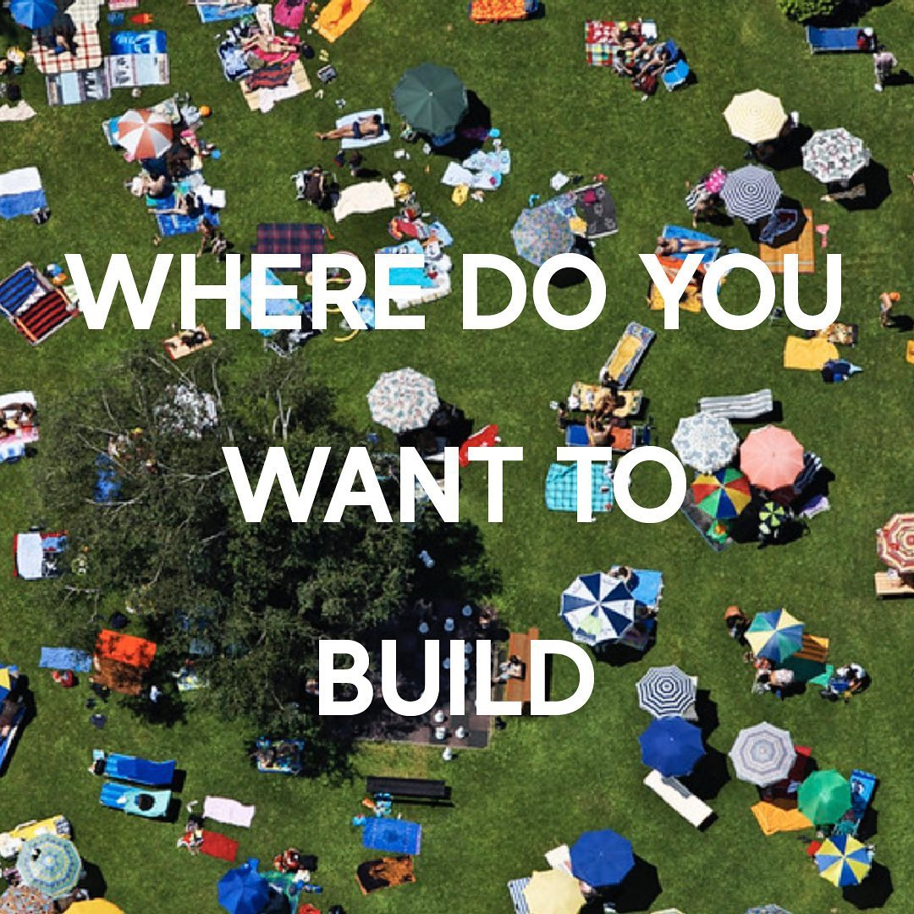
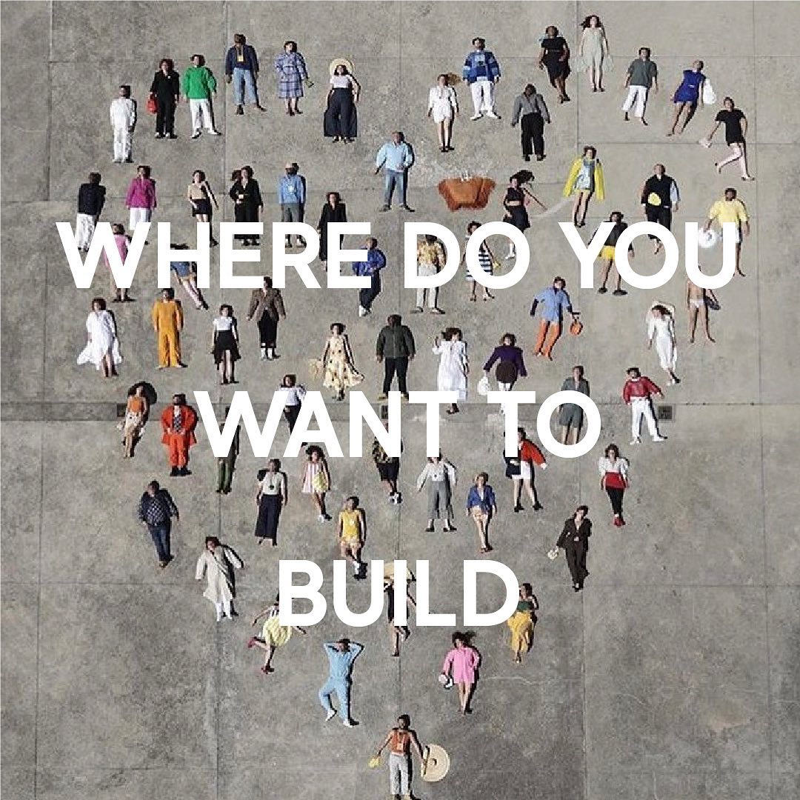

많은 사람들이 모여있는 넓은 해변가에 자신의 블랭킷을 펼치면, 그곳이 자신의 공간이라고 느껴진 적이 있지 않나요? <짓기>는 이런 경험을 통해 공간을 짓는 것을 새로운 시선으로 바라보고, 패브릭으로 ‘바닥과 벽’을 재해석하는 첫번째 프로젝트를 진행하게 되었습니다. 공간을 이루는 가장 기본적인 요소인 ‘바닥과 벽’을 짓는 행위를 일상적 경험으로서 재구성합니다.
 당신은 어디에 바닥과 벽을 짓고 싶은가요? 패브릭을 펼치는 곳이 어디든 그 곳은 당신의 공간이 됩니다.